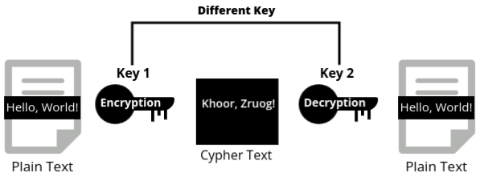
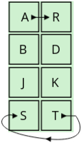

Introduction to Cryptography
Cryptography is the science of securing communication by transforming readable data (plain text) into an unreadable form (cipher text). The goal is to ensure that only authorized users can access or understand the information, protecting it from unauthorized access. Cryptography plays a key role in securing data in our everyday lives, from email communication to online banking, ensuring that private information remains confidential and secure.
Security Goals
- These goals define what cryptographic methods aim to achieve when protecting data. Without these goals, any effort to protect information becomes ineffective.
The three main security goals are confidentiality, integrity, and availability.
- Confidentiality:
- The primary goal of confidentiality is to prevent unauthorized access to data. Only those who have the right permissions should be able to view the information.
- Example: Your password is encrypted when you log in to your email, ensuring that only you and the system can access it.
- Integrity:
- Integrity ensures that the data remains unchanged and accurate. Any unauthorized modifications to data should be detectable, and only authorized users should be able to make changes.
- Example: When sending important documents via email, the integrity goal ensures the document isn’t altered during transmission.
- Availability:
- Availability ensures that authorized users can access the data or services when needed. Attacks that limit access to resources can disrupt business operations and communication.
- Example: During a denial-of-service (DoS) attack, users may be unable to access a website because the server is overwhelmed with traffic.
Classification of Cryptographic Attacks
Cryptographic attacks ka matlab hota hai un attempts se jo attackers karte hain taaki kisi cryptographic system ko tod sakein ya compromise kar sakein. Yeh attacks alag-alag basis par classify kiye jaate hain jaise ki kis security goal ko target karte hain, kis type ka damage cause karte hain, ya kaunse mathematical methods use karte hain.
1) Attacks Based on Security Goals They Impact
Cryptographic attacks ka main purpose hota hai data ki security rules ko todna. Yeh attacks data ki confidentiality (secrets ko safe rakhna), integrity (data sahi aur trustworthy ho), ya availability (hamesha accessible ho) ko target karte hain.
1. Confidentiality Attacks
- Yeh attacks ka goal hota hai bina permission ke data ko churaana ya dekhna. Basically, yeh "secrecy" ko todte hain.
-
Snooping: Jab koi chhupke se aapka data dekh leta hai bina aapke pata chale.
Data ko change nahi karte, bas spy karte hain.
Example: Koi aapke unencrypted emails ko intercept karke aapke PINs ya passwords chura le. -
Traffic Analysis: Agar data encrypted ho, tab bhi attackers data ke patterns
jaise kitna data send ho raha hai ya kab send ho raha hai, inhe observe karke clues nikalte
hain.
Example: Military communication ke timings observe karna taaki troop movements ka idea lagaya ja sake.
2. Integrity Attacks
- Yeh attacks data ko tamper karte hain taaki woh galat ya misleading ho jaye. Yeh information ki trustworthiness ko todte hain.
-
Modification: Message ya file ko bina permission ke change karna.
Example: Ek attacker bank transfer amount ko badal kar apne account mein paisa bhej leta hai. -
Masquerading (Spoofing): Koi aur ban kar systems ya logon ko trick karna.
Example: System admin ban kar sensitive files chura lena. -
Replay Attack: Purana, capture kiya hua message dobara use karke system ko
bewakoof banana.
Example: Ek recorded bank transaction ko dobara bhej kar payment duplicate karna. -
Repudiation: Aapne jo kiya hai usse deny karna, especially online communication
mein.
Example: Ek online payment hone ke baad bhi ye kehna ki payment nahi hui.
3. Availability Attacks
- Yeh attacks ka maksad hota hai ki log system ya service ka use na kar paye jab unhe zarurat ho. Ek tarah se road block karke traffic rokna jaise.
-
Denial of Service (DoS): System ko itne fake requests bhejna ki woh real
requests ko handle na kar sake.
Example: Ek website par fake traffic bhej kar usse crash kar dena, taaki real users uska access na kar sakein.
2) Attacks Based on the Type of Damage
Cryptographic attacks ko is basis par bhi classify kiya ja sakta hai ki kya yeh directly data ko damage karte hain ya sirf information churaate hain bina kisi modification ke.
- Active Attacks:
- Active attacks ka main goal hota hai data ya services ko modify karna ya disrupt karna, jo system ko harm pahunchata hai.
- Example: Ek attacker ek message ko transit ke dauraan intercept karke uska meaning change kar deta hai.
- Security Goals Compromised: Integrity aur Availability ko compromise kiya jata hai.
- Passive Attacks:
- Passive attacks ka main goal hota hai bas observe aur information collect karna bina data ko alter ya disrupt kiye.
- Example: Network traffic ko monitor karna taaki unencrypted usernames aur passwords capture kiye ja sakein.
- Security Goal Compromised: Confidentiality ko compromise kiya jata hai.
3) Attacks Based on Mathematical Viewpoint (Cryptographic Attacks)
Cryptographic attacks kabhi-kabhi mathematical flaws ko exploit karte hain jo cryptographic algorithms mein hote hain. Yeh attacks zyada technical hote hain aur encryption system ko directly todne par focus karte hain.
- Cryptoanalytic Attacks:
- Yeh attacks mathematical techniques jaise statistical analysis ka use karte hain taaki cryptographic algorithms ke vulnerabilities ko dhundha ja sake aur secret key ko deduce kiya ja sake.
- Example: RSA encryption algorithm ko todne ke liye bade prime numbers ka factorization karna.
- Non-cryptoanalytic Attacks:
- Yeh attacks cryptographic methods ke mathematical weaknesses ko target nahi karte, balki implementation ki flaws ya human error ko exploit karte hain.
- Example: Social engineering attacks jahan attackers users ko apne passwords reveal karne ke liye trick karte hain.
Cryptoanalytic Attacks
Cryptoanalytic attacks encrypted data (ciphertext) ko analyze karte hain taaki encryption ko todne ki koshish ki ja sake bina key ke baare mein jaane.
- Ciphertext-only Attack:
- Is attack mein attacker ke paas sirf ciphertext hota hai, aur woh encryption key ya original message ko deduce karne ki koshish karta hai.
- Example: Encrypted emails ko intercept karna aur statistical methods ka use karke unhe decrypt karne ki koshish karna.
- Known-plaintext Attack:
- Yahan attacker ke paas plaintext aur uska corresponding ciphertext dono hote hain, jinka use encryption process ko samajhne ke liye kiya jata hai.
- Example: Agar attacker ko message mein ek common word pata ho, toh uska use karke message ke baaki parts ko decrypt kiya ja sakta hai.
- Chosen-plaintext Attack:
- Is type ke attack mein attacker khud specific plaintexts select karta hai aur unhe encrypt karke algorithm ke patterns ko study karta hai.
- Example: "Password" word ko alag-alag encryption methods se encrypt karke ciphertext ke patterns ko analyze karna.
- Chosen-ciphertext Attack:
- Yahan attacker specific ciphertexts ko select karta hai aur unhe decrypt karne ki koshish karta hai, aur results ka use encryption system ko samajhne ke liye karta hai.
- Example: Fake ciphertexts ko system mein inject karke uske decryption process ke insights gather karna.
Non-cryptoanalytic Attacks
Non-cryptoanalytic attacks cryptographic algorithms ke bahar ki vulnerabilities ko target karte hain, jaise poor security practices ya system setup ki flaws.

Mathematics of Cryptography
introductory paragraph
Integer Arithmetic
Integer arithmetic refers to mathematical operations performed on integers (whole numbers), which include positive numbers, negative numbers, and zero. Unlike floating-point arithmetic, which can handle fractions and decimals, integer arithmetic only deals with whole numbers.
- Set of Integers: The set of integers is denoted by Z, and
it includes all integral numbers from negative infinity to positive infinity. This set can
be written as:
Z = { ..., -2, -1, 0, 1, 2, ... }
Division in Integer Arithmetic
When dividing two integers, we may not always get a whole number. Instead, we can express the division in terms of quotient and remainder. For two integers a (the dividend) and n (the divisor), the operation can be described by the equation:
- a = q × n + r
- Where:
- a = dividend
- n = divisor
- q = quotient
- r = remainder
- The remainder r will always be less than the divisor n and greater than or equal to zero.
Example:
- 100 divided by 9:
- a = 100, n = 9
- The quotient q is 11, and the remainder r is 1.
- 100 = 11 × 9 + 1
- 122 divided by 11:
- a = 122, n = 11
- The quotient q is 11, and the remainder r is 1.
- 122 = 11 × 11 + 1
Restrictions in Integer Arithmetic Division
- The divisor n must be a positive integer: n > 0
- The remainder r must be non-negative: r ≥ 0
These restrictions ensure consistency in how we define quotient and remainder.
Greatest Common Divisor (GCD)
The greatest common divisor (GCD) of two integers a and b is the largest integer that divides both a and b without leaving a remainder. It helps in simplifying ratios or fractions and is essential in cryptography for algorithms like RSA.
- For example, the GCD of 24 and 18 is 6, because 6 is the largest integer that divides both numbers evenly.
Euclidean Algorithm
The Euclidean Algorithm is a method to compute the GCD of two integers. It is based on the principle that the GCD of two numbers does not change if the larger number is replaced by its remainder when divided by the smaller number.
Steps:
- Divide a by b, and get the remainder r.
- Replace a with b, and b with r.
- Repeat the process until the remainder becomes zero.
- The last non-zero remainder is the GCD.
Example:
- Let’s compute the GCD of 252 and 105 using the Euclidean Algorithm:
- 252 ÷ 105 = 2 (quotient) with a remainder of 42 (i.e., 252 = 2 × 105 + 42)
- 105 ÷ 42 = 2, remainder 21
- 42 ÷ 21 = 2, remainder 0
- The GCD is 21.
Modular Arithmetic
Modular arithmetic is a system of arithmetic for integers, where numbers "wrap around" upon reaching a certain value—the modulus. This is widely used in cryptography, computer science, and number theory.
In modular arithmetic, we work with the remainder of a division operation. If we divide a number by another (called the modulus), the remainder is the result of the modular operation. The notation is:
- a ≡ b (mod n)
- Where:
- a is the dividend (the number we are dividing)
- b is the remainder
- n is the modulus (the number by which we are dividing)
Understanding Modular Arithmetic
- a ≡ b (mod n) means that when a is divided by n, the remainder is b.
- If two numbers have the same remainder when divided by a modulus n, they are considered congruent.
Example:
- 7 ≡ 3 (mod 4):
- When you divide 7 by 4, the quotient is 1 and the remainder is 3.
- 10 ≡ 1 (mod 3):
- When you divide 10 by 3, the quotient is 3 and the remainder is 1.
- 15 ≡ 0 (mod 5):
- When you divide 15 by 5, there is no remainder, so it is congruent to 0 mod 5.
Applications in Cryptography
Modular arithmetic plays a crucial role in cryptography. It is used in algorithms like RSA, Diffie-Hellman, and elliptic curve cryptography, which rely on the difficulty of reversing modular exponentiation without knowing the private key.
Congruence
Congruence is a fundamental concept in modular arithmetic that deals with the relationship between two integers. Two numbers are said to be congruent modulo a number if they leave the same remainder when divided by that number.
The notation for congruence is:
- a ≡ b (mod n)
- Where:
- a and b are integers
- n is the modulus
- If a ≡ b (mod n), it means that when both a and b are divided by n, they leave the same remainder.
Understanding Congruence
- If two numbers are congruent modulo n, their difference is divisible by n.
- a ≡ b (mod n) implies that (a - b) is divisible by n, meaning a - b = kn, where k is an integer.
Example of Congruence:
- 12 ≡ 5 (mod 7):
- When you divide both 12 and 5 by 7, the remainder is the same (5).
- Also, 12 - 5 = 7, which is divisible by 7.
- 20 ≡ 2 (mod 6):
- When 20 and 2 are divided by 6, both give the same remainder (2).
- Additionally, 20 - 2 = 18, which is divisible by 6.
Congruence and Cryptography:
- Congruence plays a key role in cryptographic algorithms, especially in public-key cryptography like RSA, where large integers and modular exponentiation are used.
- In RSA encryption, for instance, the message is encrypted using the equation C ≡ M^e (mod n), and the decryption follows a similar form with modular arithmetic.
Matrices
A matrix is a rectangular array of numbers or symbols arranged in rows and columns. It is a fundamental concept in mathematics used for various applications, including solving systems of linear equations, transformations in geometry, and cryptography.
Basic Terminology:
- Order of a Matrix: The size of a matrix is described by the number of rows and columns it has. A matrix with m rows and n columns is called an m x n matrix.
- Element of a Matrix: Each value in the matrix is called an element, usually denoted by aij, where i is the row number and j is the column number.
Types of Matrices:
- Square Matrix: A matrix with the same number of rows and columns (e.g., 3x3 matrix).
- Identity Matrix: A square matrix where all the diagonal elements are 1, and all other elements are 0.
- Zero Matrix: A matrix where all elements are 0.
- Diagonal Matrix: A matrix where all non-diagonal elements are 0.
- Transpose of a Matrix: The matrix obtained by switching the rows and columns of a given matrix.
Matrices in Cryptography:
- Matrices are often used in cryptography, particularly in algorithms like the Hill Cipher, where they are employed to encrypt and decrypt messages using matrix multiplication.
Types of Cryptography
Cryptography ka matlab hai information ko secure rakhne ke liye usse ek unreadable format mein badal dena. Iske alag-alag techniques hain jo alag purposes ke liye use hoti hain aur data security ensure karte hain. Cryptography ke main types hain: symmetric cryptography, asymmetric cryptography, aur hash functions. Har ek type ke apne unique features aur applications hain jo digital communication aur data ko secure karte hain.
Symmetric Cryptography
- Symmetric cryptography, jise secret key cryptography ya private key cryptography bhi kehte hain, ek simple encryption technique hai jisme ek single key ka use hota hai encryption aur decryption dono ke liye. Matlab, wahi key use karke plaintext ko ciphertext mein badla jata hai aur usse wapas plaintext banaya jata hai. Iska security pura isi baat pe depend karta hai ki key dono communicating parties ke beech secret rahe.
- Symmetric key cryptography ka sabse popular system hai DES (Data Encryption Standard), jo data secure karne ke liye widely use hota tha. Lekin, computational power ke advancements ki wajah se DES ko zyada secure algorithms jaise AES (Advanced Encryption Standard) ne replace kar diya hai.
Asymmetric Cryptography
Asymmetric cryptography, jise public key cryptography bhi kehte hain, do alag-alag keys ka use karta hai encryption aur decryption ke liye. Ek key, jo public key kehlati hai, openly share ki jati hai aur koi bhi ise use karke data encrypt kar sakta hai. Dusri key, jo private key hoti hai, owner ke paas secret rakhi jati hai aur isi ka use karke public key se encrypt kiya hua data decrypt kiya jata hai.
- Public Key: Yeh key widely distribute ki jati hai aur sabke liye available hoti hai. Iska use data encrypt karne ke liye hota hai.
- Private Key: Yeh key owner ke paas confidential rakhi jati hai. Iska use public key se encrypt kiye gaye data ko decrypt karne ke liye hota hai.
Note: Jo message public key se encrypt hota hai, woh sirf corresponding private key se hi decrypt ho sakta hai. Aur jo message private key se encrypt hota hai, woh sirf corresponding public key se hi decrypt ho sakta hai.
Popular asymmetric key algorithms hain RSA (Rivest–Shamir–Adleman), DSA (Digital Signature Algorithm), aur elliptic curve cryptography (ECC).
Hash Functions
Hash functions cryptographic algorithms hote hain jo variable-size input data se fixed-size output (hash value) generate karte hain. Inka main purpose data integrity ko ensure karna hai, matlab har unique input data ke liye ek unique hash value generate hoti hai. Agar input data mein thoda bhi change hota hai, toh hash value puri tarah se different ho jati hai, isliye hash functions data ke alterations ya corruption ko detect karne ke liye kaafi useful hote hain.
- Hash functions one-way functions hote hain, iska matlab hai ki unhe reverse karke original data nahi nikala ja sakta from the hash value.
- Common hash functions mein MD5 (Message Digest Algorithm 5), SHA-1 (Secure Hash Algorithm 1), aur SHA-256 (Secure Hash Algorithm 256) include hote hain.
Example: Password Storage and Verification
Jab koi user apne account ka password banata hai, toh woh password directly database mein store nahi hota. Uske badle, password ko ek hash function se process kiya jata hai taaki ek hash value generate ho jaye. Yeh hash value database mein store ki jati hai.
Yeh kaise kaam karta hai, yeh dekho:
- User Registration: Jab user apna password set karta hai, toh woh password ek hash function (jaise SHA-256) se hash hota hai taaki ek hash value generate ho sake. Maan lo, agar password "mypassword" hai, toh hash function kuch aise hash generate karega: "5e884898da28047151d0e5" (yeh bas ek sample hash hai).
- Storing the Hash: Jo hash value ban kar aati hai, woh database mein store hoti hai, na ki actual password. Isse yeh ensure hota hai ki agar database compromise bhi ho jaye, toh plaintext password exposed na ho.
- User Login: Jab user login karne ki koshish karta hai, woh apna password enter karta hai. Yeh password phir se same hash function se process hota hai aur ek hash value generate hoti hai.
- Verification: Jo hash value enter ki gayi password se banayi gayi hoti hai, woh database mein stored hash value se compare ki jati hai. Agar dono hash values match karti hain, toh password correct hai aur user ko access mil jata hai. Agar match nahi karti, toh access deny kar diya jata hai.
Hash functions ka use karke passwords ko secure aur confidential rakha jata hai, kyunki original password ko hash value se directly retrieve nahi kiya ja sakta.
Difference between Symmetric and Asymmetric Cryptography

Conventional Encryption Model
Conventional encryption model, jise classical encryption model bhi kaha jata hai, symmetric cryptography ka ek fundamental concept hai. Yeh model data ko encrypt aur decrypt karne ka process describe karta hai, jisme ek hi key ka use hota hai. Yeh model traditional encryption techniques ka base hai aur modern symmetric algorithms ko samajhne ke liye zaroori hai. Is model ke key components hain:
- Plaintext: Yeh wo original, readable data hota hai jise protect karna hota hai. Jaise ek message ya file jo user chahta hai ki unauthorized access se confidential rahe.
- Encryption Algorithm: Yeh wo process hai ya rules ka set hai jo plaintext ko ciphertext mein convert karta hai. Is algorithm mein mathematical operations aur logical functions ka use hota hai, jisme key ko apply karke encryption hoti hai.
- Key: Yeh ek secret value hoti hai jo encryption algorithm ko transformation perform karne mein help karti hai. Sender aur receiver dono ko securely yeh key share aur store karni padti hai taaki communication ki integrity maintain ho sake.
- Ciphertext: Yeh wo encrypted, unreadable data hota hai jo encryption algorithm ke through generate hota hai. Yeh result hota hai plaintext par key apply karne ka, jo unauthorized parties se secure ho jata hai.
- Decryption Algorithm: Yeh wo process hai jo ciphertext ko wapas plaintext mein convert karta hai. Is algorithm mein wahi key use hoti hai jo encryption ke time thi, taaki transformation reverse karke intended recipient ko original data mil sake.
Conventional encryption model ko samajhna bohot zaroori hai kyunki yeh hume classical ciphers tak le jata hai, jo in principles ko real-life mein dikhate hain. Ek kaafi famous example hai Caesar cipher, jo encryption aur decryption ke basic concepts ko simple tareeke se explain karta hai. Caesar cipher ko dekh kar hum samajh sakte hain ki ek simple algorithm aur ek key kaise effectively information ko secure karte hain, aur yeh modern cryptography ke complex encryption methods ka foundation banata hai.
Caesar Cipher
The Caesar cipher is one of the oldest and simplest encryption techniques, named after Julius Caesar, who reportedly used it to protect his messages. This cipher operates by shifting each letter in the plaintext a fixed number of places down the alphabet. For example, with a shift of 3:
- A becomes D
- B becomes E
- C becomes F
This means that a message like "HELLO" would be encrypted as "KHOOR" with a shift of 3. The process is reversible: the same key can be used to decrypt the ciphertext back to the original plaintext.
The simplicity of the Caesar cipher makes it an excellent introduction to the concepts of encryption and decryption, but it also highlights vulnerabilities associated with classical ciphers, such as the ease of frequency analysis. Despite its weaknesses, the Caesar cipher remains a fundamental educational tool in the study of cryptography.
Below is a visual representation of the Caesar cipher with a shift of 3:

Symmetric Key Ciphers
Hum jaante hain ki symmetric cryptography mein ek hi key ko encryption aur decryption dono ke liye use kiya jata hai. Ek cipher wo algorithm ya method hota hai jo encryption perform karta hai. Symmetric key ciphers mein wahi secret key use hoti hai jo readable data (plaintext) ko unreadable format (ciphertext) mein convert karne ke liye aur phir wapas plaintext mein laane ke liye kaam karti hai.
- Stream aur Block ciphers symmetric key ciphers ke do main types hain, jo encryption ke dauran data process karne ke tareeke mein alag hote hain.
- Stream aur block ciphers ke baare mein samajhne se pehle, cryptographic methods mein do key principles ko samajhna zaroori hai: confusion aur diffusion. Yeh concepts encryption ki security ko enhance karte hain, jisse attackers ke liye original message ko decipher karna mushkil ho jata hai.
Confusion and Diffusion
Encryption algorithms do important properties par heavily depend karte hain taaki data ki security ensure ho sake: confusion aur diffusion. Yeh concepts Claude Shannon ne introduce kiye the aur encryption ko zyada secure banane mein help karte hain, jisse plaintext aur ciphertext ke beech patterns ko hide kiya ja sake.
- Confusion: Yeh property kaam karti hai encryption key aur ciphertext ke beech relation ko itna complex banane par. Simple shabdon mein, confusion ka goal yeh hota hai ki plaintext aur resulting ciphertext ke beech ka connection difficult to understand ho jaye. Agar kisi third party ke paas ciphertext hai bhi, toh wo plaintext ya encryption key ko easily identify nahi kar sakta. Ek cipher jo confusion par zyada depend karta hai, wo data ko easily decrypt hone se protect karta hai.
- Diffusion: Diffusion property ensure karti hai ki plaintext mein koi bhi chhoti si change ciphertext mein significant aur unpredictable changes le aaye. Yeh isliye hota hai kyunki har ek bit of plaintext ciphertext ke multiple bits ko affect karti hai. Agar plaintext ka ek bit bhi alter ho jaye, toh corresponding ciphertext drastically change ho jana chahiye, jisse encryption ki security aur zyada badh jaati hai.
Confusion aur diffusion dono hi strong encryption system banane ke liye essential hote hain. Jahaan confusion key aur ciphertext ke beech relation ko hide karta hai, wahi diffusion har bit ki influence ko ciphertext ke across spread kar ke pattern recognition ko protect karta hai.
Ek classical symmetric key cipher jo yeh principles use karta hai, khaas karke confusion ko, wo hai Playfair cipher. Modern ciphers kaafi evolve ho chuke hain, lekin Playfair cipher encryption techniques ke development mein ek important step tha. Yeh demonstrate karta hai ki purane cryptographers kaise secure methods banane ki koshish karte the, sirf individual letters ko encrypt na karke pairs of letters (digraphs) ko encrypt karke, jo simple frequency analysis se break karna mushkil banata tha.
Playfair Cipher
The Playfair cipher is a manual symmetric encryption technique that was popular during World War I. It encrypts digraphs (pairs of letters), rather than single letters, making frequency analysis more difficult than in simple substitution ciphers. The cipher uses a 5x5 grid of letters constructed from a keyword. It is a classical example of a symmetric key cipher and focuses on obscuring the relationship between the plaintext and the ciphertext, highlighting the principle of confusion.
Playfair Cipher: Step-by-Step Breakdown
Step 1: Create the 5x5 Grid
- Start by writing out the keyword (in our case, "MONARCHY"), without repeating any letters.
- After placing the keyword in the grid, fill the remaining spaces with the rest of the alphabet, excluding "J". In the Playfair cipher, "I" and "J" are usually treated as the same letter.
Example grid using "MONARCHY":
M O N A R
C H Y B D
E F G I K
L P Q S T
U V W X Z
Step 2: Prepare the Plaintext
- Pair the letters:
- Divide the plaintext into pairs of two letters. If there is an odd number of letters, add an "X" at the end.
- Handling repeated letters: If a pair contains two identical letters (like "LL"), insert an "X" between them to separate the pair.
- Example of pairing:
- For the plaintext "ATTACK":
- Pairs: "AT", "TA", "CK" (No repeated letters, so no need to add an 'X').
- If the plaintext were "HELLO":
- Pairs: "HE", "LX", "LO" (The repeated "L" is separated by an "X").
- For the plaintext "ATTACK":
Step 3: Apply the Playfair Cipher Rules
Now that we have the plaintext divided into pairs, we can encrypt each pair using the following rules:
- Same Row Rule: If both letters of the pair are in the same row, replace each letter with the
letter to its immediate right. If the letter is at the far right of the row, wrap around to
the
beginning of the row.
- Example: In the pair "AR" (row 1: A and R), "A" becomes "R" and "R" wraps around to "M".
- Result: "AR" becomes "RM".
- Same Column Rule: If both letters are in the same column, replace each letter with the
letter
immediately below it. If the letter is at the bottom, wrap around to the top of the column.
- Example: In the pair "CL" (column 1: C and L), "C" becomes "L" and "L" wraps around to "U".
- Result: "CL" becomes "LU".
- Rectangle Rule (Different Row and Column): If the two letters form a rectangle (i.e., they
are
in different rows and columns), replace them with the letters at the opposite corners of the
rectangle. Each letter moves horizontally to the other corner of the rectangle while staying
in
its own row.
Note: In the Rectangle Rule of the Playfair cipher, the replacements are always done horizontally, not vertically. This means you swap the letters with the ones at the opposite corners of the rectangle while staying in the same row as the original letters.- Example: For the pair "AT":
- "A" is in row 1, column 4 (1,4) and "T" is in row 4, column 5 (4,5).
- They form a rectangle. To encrypt, replace "A" with the letter in the same row but at the opposite corner of the rectangle, which is "R". Similarly, replace "T" with the letter at the opposite corner in its row, which is "S".
- Result: "AT" becomes "RS".

- Example: For the pair "AT":
Step 4: Finalize the Ciphertext
- Once all pairs have been encrypted, combine them to get the final ciphertext.
Playfair Cipher: Example Encryptions
Example 1: Encrypting "ATTACK" with the keyword "MONARCHY"
Step 1: Create the 5x5 Grid
M O N A R
C H Y B D
E F G I K
L P Q S T
U V W X Z
Step 2: Prepare the Plaintext
- Pair the letters:
- Plaintext: "ATTACK"
- Pairs: "AT", "TA", "CK" (No repeated letters)
Step 3: Apply the Playfair Cipher Rules
- Pair 1: "AT"
- "A" is at (1,4) and "T" is at (4,5).
- They form a rectangle. Using the rectangle rule, "A" becomes "R" and "T" becomes "S".
- Result: "AT" becomes "RS".
- Pair 2: "TA"
- "T" is at (4,5) and "A" is at (1,4).
- They also form a rectangle. "T" becomes "S" and "A" becomes "R".
- Result: "TA" becomes "SR".
- Pair 3: "CK"
- "C" is at (2,1) and "K" is at (3,5).
- They form a rectangle. "C" becomes "D" and "K" becomes "E".
- Result: "CK" becomes "DE".
Step 4: Finalize the Ciphertext
- Ciphertext: RS SR DE
Example 2: Encrypting "HELLO" with the keyword "MONARCHY"
Step 1: Create the 5x5 Grid
M O N A R
C H Y B D
E F G I K
L P Q S T
U V W X Z
Step 2: Prepare the Plaintext
- Pair the letters:
- Plaintext: "HELLO"
- Pairs: "HE", "LX", "LO" ("L" is repeated, so we insert an "X" between the letters)
Step 3: Apply the Playfair Cipher Rules
- Pair 1: "HE"
- "H" is at (2,2) and "E" is at (3,1).
- They form a rectangle. "H" becomes "C" and "E" becomes "F".
- Result: "HE" becomes "CF".
- Pair 2: "LX"
- "L" is at (4,1) and "X" is at (5,4).
- They form a rectangle. "L" becomes "S" and "X" becomes "U".
- Result: "LX" becomes "SU".
- Pair 3: "LO"
- "L" is at (4,1) and "O" is at (1,2).
- They form a rectangle. "L" becomes "P" and "O" becomes "M".
- Result: "LO" becomes "PM".
Step 4: Finalize the Ciphertext
- Ciphertext: CF SU PM
Stream Ciphers
Stream ciphers ek type ka encryption method hai jo data ko ek time par ek bit ya ek byte encrypt karta hai. Iska matlab hai ki input data continuously process hota rehta hai jaise hi wo encryption algorithm mein feed hota hai. Yeh approach real-time applications ke liye kaafi useful hoti hai, jaise ki network communications (e.g., secure messaging apps) ya streaming services (e.g., video/audio streaming).
- Kaise kaam karta hai: Stream cipher mein har ek plaintext digit (chahe wo ek bit ho ya ek byte) ko individually encrypt kiya jata hai. Iske liye ek corresponding digit ka use hota hai jo keystream se generate hoti hai. Keystream ek pseudo-random sequence hota hai jo key par depend karta hai.
- XOR operation: Plaintext aur keystream ke bits ko combine karne ke liye XOR (exclusive OR) operation ka use hota hai. XOR ek simple logical operation hai jisme do bits ko compare kiya jata hai. Agar dono bits alag-alag hain (1 aur 0 ya 0 aur 1), toh result 1 hota hai. Agar dono same hain (0 aur 0 ya 1 aur 1), toh result 0 hota hai. Yeh operation ciphertext stream banata hai jo unreadable hoti hai.
- Speed aur efficiency: Yeh method simple aur fast hota hai, isiliye stream ciphers un environments ke liye ideal hote hain jahan speed critical hai, jaise live video streams ya instant messaging.
- Confusion property: Stream ciphers ka primary security feature confusion hota hai. Yeh property ensure karti hai ki ciphertext aur key ke beech ka relationship itna complex ho ki attacker ke liye key ya plaintext guess karna impossible ho jaye. Simple shabdon mein, confusion ciphertext aur key ke connection ko obscure kar deta hai.
Stream Cipher Example
Vernam Cipher: Stream cipher ka ek classic example Vernam cipher hai. Ismein plaintext ke har ek bit ko keystream ke corresponding bit ke saath XOR kiya jata hai taaki ciphertext generate ho sake. Agar keystream perfectly random ho aur plaintext ki length ke equal ho, toh yeh method theoretically unbreakable hai (isko "One-Time Pad" kehte hain).
Example dekhte hain:
- Sochiye aapka plaintext binary form mein hai:
10101100 - Keystream binary form mein hai:
11001010 - Ab har ek bit ko XOR operation ke through combine karte hain:
1 XOR 1 = 00 XOR 1 = 11 XOR 0 = 10 XOR 0 = 01 XOR 1 = 01 XOR 0 = 10 XOR 1 = 10 XOR 0 = 0
- Resulting ciphertext hoga:
01100110
Advantages: Vernam cipher ya stream ciphers ka use karne se aap real-time secure data transmission achieve kar sakte ho. Agar keystream truly random ho aur ek hi baar use ho (hence "one-time pad"), toh yeh encryption method theoretically sabse secure maana jata hai.
Limitations: Practical scenarios mein ek perfect random keystream generate karna aur securely distribute karna mushkil hota hai. Is wajah se stream ciphers ke advanced versions use hote hain jo pseudo-random keystreams generate karte hain.
Block Ciphers
Block ciphers ek type ka encryption technique hai jo plaintext ko fixed-size blocks mein tod kar encrypt karta hai. Har block ko alag-alag encrypt kiya jata hai, aur yeh size algorithm ke upar depend karta hai. Common block sizes 64 bits ya 128 bits hote hain.
- Process: Block cipher ek saath poore block ko encrypt karta hai, na ki stream ciphers ki tarah ek-ek bit ya byte ko individually process karta hai. Yeh approach zyada structured aur secure hoti hai.
- Confusion aur Diffusion: Block ciphers confusion aur diffusion properties ka use karte hain.
- Confusion ensures karta hai ki ciphertext aur key ke beech ka relationship complex ho.
- Diffusion ensure karta hai ki plaintext mein chhoti si bhi change ciphertext ko drastically badal de.
Types of Block Ciphers
Block ciphers symmetric key algorithms hote hain, jisme ek hi key encryption aur decryption dono ke liye use hoti hai. Yeh plaintext ko ciphertext mein convert karte hain using multiple rounds of transformations. Do important block ciphers hain: Advanced Encryption Standard (AES) aur Data Encryption Standard (DES).
1. Advanced Encryption Standard (AES)
AES ek widely used block cipher hai jo DES ko replace karne ke liye design kiya gaya tha. Iske kuch key features hain:
- Block Size: AES 128-bit blocks par kaam karta hai.
- Key Sizes: AES flexible hai aur 128, 192, aur 256-bit key lengths ko support karta hai.
- Rounds: Encryption ke liye number of rounds depend karta hai key length par:
- 128-bit key ke liye 10 rounds
- 192-bit key ke liye 12 rounds
- 256-bit key ke liye 14 rounds
- Security: AES highly secure mana jata hai aur most modern attacks ke against resistant hai. Iska use government, finance, aur healthcare sectors mein hota hai.
- Standardization: U.S. National Institute of Standards and Technology (NIST) ne isko 2001 mein adopt kiya tha.
2. Data Encryption Standard (DES)
DES ek purana block cipher hai jo kabhi kaafi popular tha, lekin ab outdated hai due to vulnerabilities. Iske kuch important aspects hain:
- Block Size: DES 64-bit blocks par kaam karta hai.
- Key Size: DES ka key size 56 bits hai (8 bits parity ke liye reserved hain), jo aaj ke standards ke hisaab se kaafi chhota hai.
- Rounds: Encryption process 16 rounds ka hota hai, jisme alag-alag transformations apply hoti hain.
- Security: DES ab insecure mana jata hai kyunki iske short key size ki wajah se brute-force attacks possible hain.
- Standardization: DES ko 1977 mein federal standard ke roop mein adopt kiya gaya tha, lekin 1990s ke baad isko AES aur other stronger algorithms ne replace kar diya.
Comparison of AES and DES
AES aur DES dono block ciphers ke examples hain, lekin dono mein kaafi differences hain:
- Security Level: AES modern attack methods ke against secure hai, jabki DES ka short key length usko vulnerable banata hai.
- Performance: AES zyada efficient hai aur modern hardware par better perform karta hai.
- Usage: AES ab ek global standard hai, jabki DES ko purani aur weak technology ke roop mein phase out kar diya gaya hai.
Comparing Stream and Block Ciphers
Dono stream aur block ciphers cryptography ke important tools hain, lekin inka data process karne ka tareeka aur encryption methods alag hote hain. Kisi specific application ke requirements jaise speed, security, aur data ki nature ke basis par in dono me se ek choose kiya jata hai.
- Input Size:
- Stream ciphers data ko ek-ek bit ya ek-ek byte ke hisaab se process karte hain, continuously.
- Block ciphers data ko fixed-size blocks mein tod kar process karte hain, jaise 64 bits ya 128 bits ek block ke liye.
- Iska matlab hai ki stream cipher real-time applications ke liye zyada useful hote hain, jabki block ciphers structured data processing ke liye best hain.
- Design Complexity:
- Stream ciphers ka design complex hota hai kyunki yeh continuously data encrypt karte hain bina kisi rukawat ke.
- Block ciphers structured design use karte hain, jisme predefined block sizes hote hain aur transformations har block par lagayi jati hain.
- Encryption Principle:
- Stream ciphers mostly confusion property ka use karte hain, jo key aur ciphertext ke beech ke relationship ko obscure banati hai.
- Block ciphers confusion aur diffusion dono ka use karte hain, jisse plaintext ke patterns completely hide ho jate hain aur security aur zyada badhti hai.
- Speed:
- Stream ciphers kaafi fast hote hain kyunki yeh data ko continuously process karte hain bina kisi full block ka wait kiye.
- Block ciphers comparatively slower hote hain kyunki inhe ek poora block data ka milne ka wait karna padta hai pehle encryption start karne ke liye.
- Decryption:
- Stream ciphers generally simple XOR operation ka use karte hain for decryption, jo unko easy aur quick banata hai.
- Block ciphers mein decryption process zyada complex hota hai, kyunki yeh encryption process ke reverse steps apply karte hain.